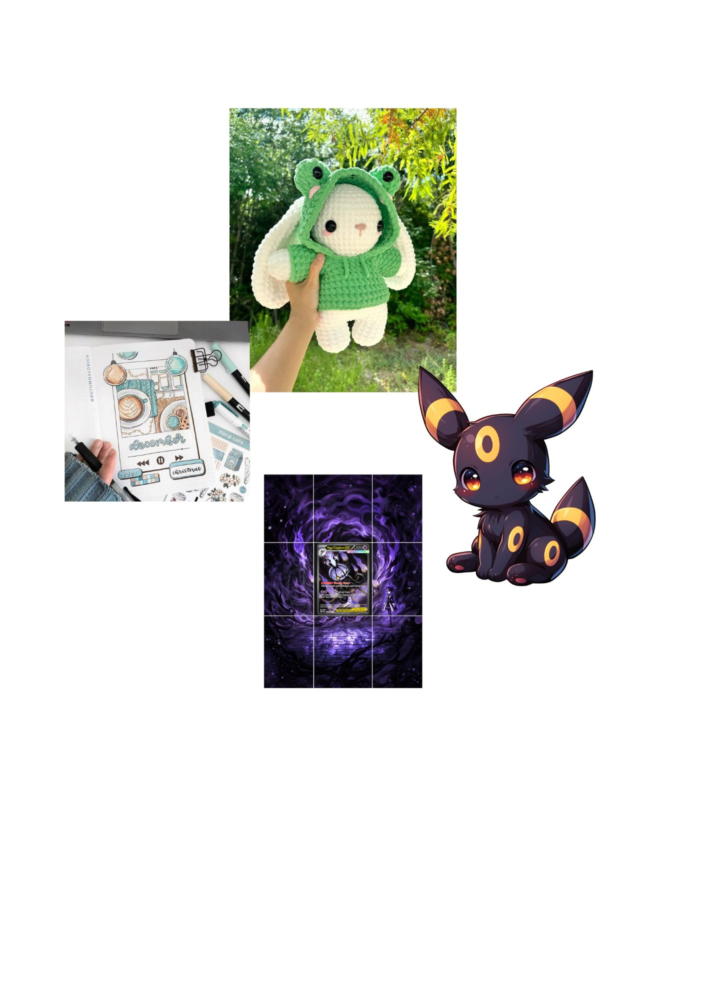
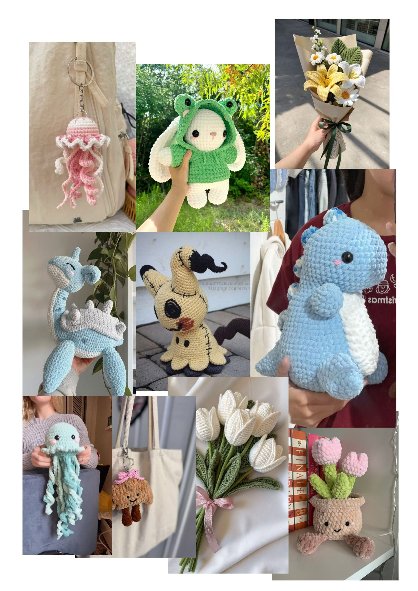
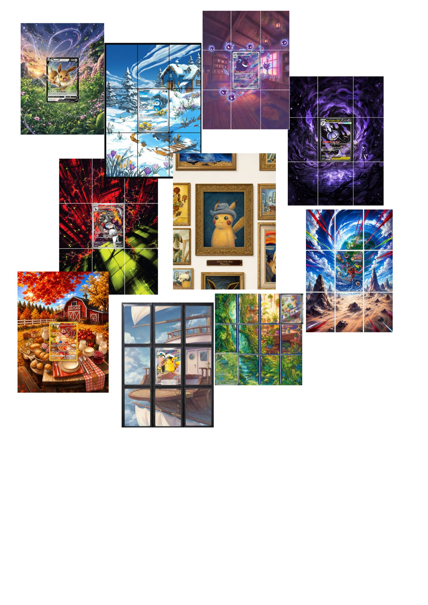
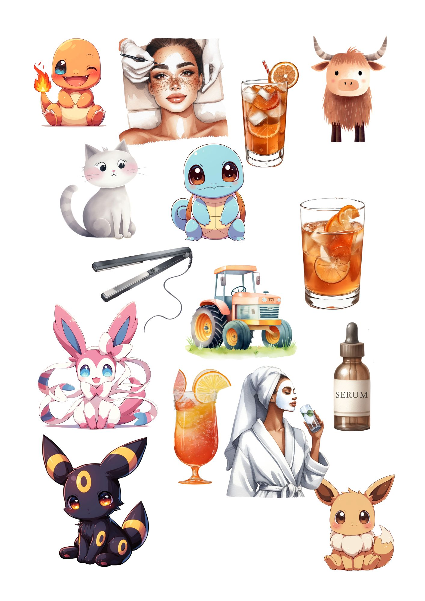
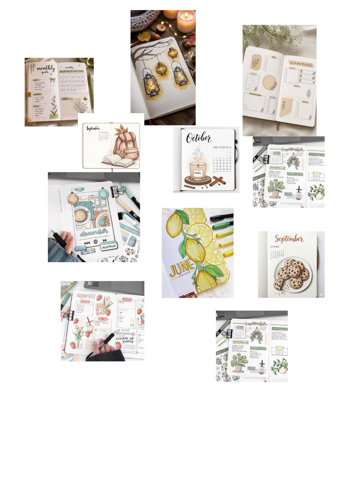
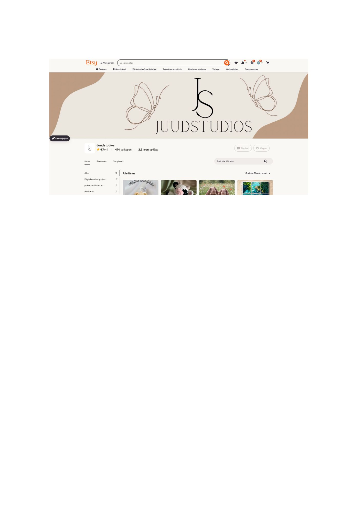

class: center, middle <!-- In deze textarea kan je in Markdown de slides aanpassen, zie https://github.com/gnab/remark/wiki voor alle mogelijkheden! --> # Inspiratie voor de digital garden van Judith Hoe mijn creatieve hobby's mijn omschrijven. --- # Wat ga ik vertellen? 1. Mijn creatieve interesses 2. Waarom creativiteit belangrijk voor mij is 3. Van hobby naar side hustle 4. Patronen die ik in de beelden herken 5. Mijn inspiratiebronnen 6. Mijn idee voor een digital garden --- # Mijn creatieve interesses Mijn creativiteit komt op verschillende manieren terug. Ik haak, maak Pokémon binder art, ontwerp mijn eigen stickers en vul journals. Deze hobby’s lijken verschillend, maar bij alles maak ik van losse ideeën en materialen iets persoonlijks. <div style="text-align: center;"> <p></p> </div> --- # Waarom vind ik dit leuk? Creatief bezig zijn geeft mij de vrijheid om steeds iets nieuws te proberen. Ik kan mijn ideeën zichtbaar maken, kleuren en materialen combineren en een ontwerp blijven aanpassen totdat het echt bij mij past. Ik vind vooral het proces leuk: beginnen met een klein idee en stap voor stap ontdekken wat het kan worden. --- # Haken Bij haken maak ik met één draad steeds verder een vorm. Ik kies kleuren en patronen, probeer nieuwe steken en zie langzaam een eindresultaat ontstaan. Het is precies werk, maar tegelijkertijd ook rustgevend. <div style="text-align: center;"> <p></p> </div> --- # Pokémon binder art Bij binder art ontwerp ik een omgeving rondom een Pokémonkaart. Ik laat kleuren, vormen en landschappen uit de kaart doorlopen, zodat meerdere kaartvakjes samen één groter kunstwerk vormen. Ik ontwerp het digitaal en maak het daarna met de hand af door te printen, plakken, snijden en alles in sleeves te plaatsen. <div style="text-align: center;"> <p></p> </div> --- # Zelf stickers maken Bij stickers kan ik kleine ideeën snel omzetten in iets tastbaars. Ik bedenk een vorm, maak een illustratie, kies kleuren en zorg dat het ontwerp ook op klein formaat duidelijk en leuk blijft. <div style="text-align: center;"> <p></p> </div> --- # Journalen In mijn journal combineer ik herinneringen, kleuren, stickers, tekst en afbeeldingen. Een pagina hoeft niet perfect te zijn. Juist door verschillende onderdelen te verzamelen en te combineren, ontstaat er iets persoonlijks. <div style="text-align: center;"> <p></p> </div> --- # Van hobby naar side hustle Mijn creatieve hobby’s zijn inmiddels ook een kleine side hustle geworden. Via mijn Etsy-shop verkoop ik producten die ik zelf heb ontworpen en gemaakt. - Handgemaakte stickers - Zelfgemaakte haakpatronen - Pokémon binder art <div style="text-align: center;"> <a href="https://www.etsy.com/shop/Juudstudios"> <p></p> </a> </div> --- # Wat herken ik in mijn beelden? - Veel kleur, maar wel in combinaties die bij elkaar passen - Speelse vormen en kleine details - Zowel digitaal als met de hand werken - Losse onderdelen samenbrengen tot één geheel - Experimenteren en blijven aanpassen - Iets maken dat persoonlijk en uniek voelt De grootste overeenkomst is dat mijn ideeën tijdens het maken blijven groeien. Ik weet vooraf nog niet altijd precies hoe het eindresultaat wordt. --- # Mijn 10 inspiratiebronnen 1. https://tcg.pokemon.com/en-us/galleries/151/ 2. https://www.youtube.com/results?search_query=pokemi+binder+art 3. https://www.youtube.com/results?search_query=haken+steken 4. https://www.etsy.com/nl/search?q=binder%20art&ref=search_bar 5. https://www.etsy.com/search?q=crochet&ref=search_bar&instant_download=false 6. https://www.etsy.com/search?q=stickers&ref=search_bar&instant_download=false 7. https://nl.pinterest.com/search/pins/?q=journal&rs=typed 8. https://nl.pinterest.com/search/pins/?q=stickers&rs=typed 9. https://nl.pinterest.com/search/pins/?q=binder%20art&rs=typed 10. https://nl.pinterest.com/search/pins/?q=crochet&rs=rs&source_id=rs_YwDtTNS2&eq=c&etslf=4672 --- # Mijn website stijl Op mijn homepage wil ik mijn vier creatieve hobby’s laten zien. Bezoekers kunnen daarna per hobby verder kijken naar mijn inspiratie, proces en eindresultaten. - Haken: patronen, materialen en gemaakte projecten - Binder art: ontwerpen, Pokémonkaarten en mijn maakproces - Stickers: schetsen, stickervellen en producten uit mijn Etsy-shop - Journalen: pagina’s, herinneringen en inspiratie De verschillende onderdelen worden met links aan elkaar verbonden. Zo kunnen bezoekers steeds verder door mijn creatieve wereld ontdekken. <!-- Laat onderstaande staan anders breekt je presentatie -->